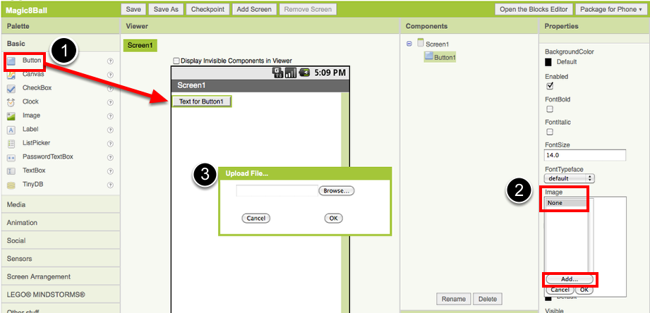
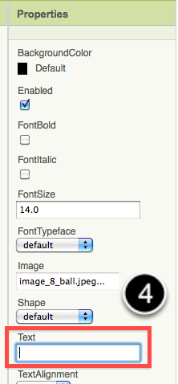
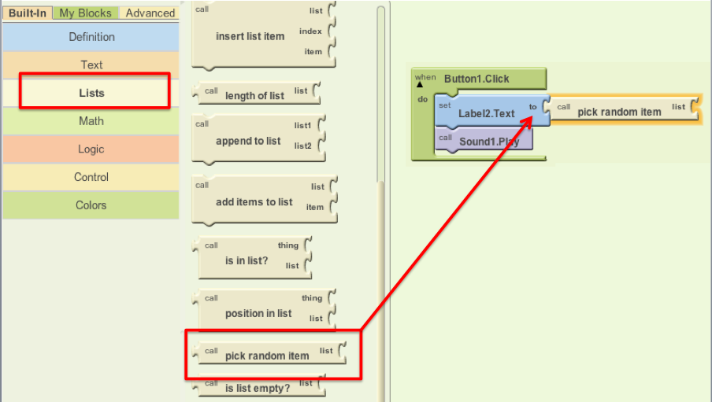
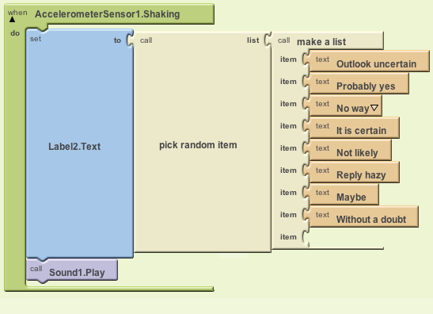

Lesson One: Magic 8-Ball Predicts the Future
This introductory module will guide you through building a “Magic 8-Ball” app with App Inventor. When activated, your 8-ball will deliver one of its classic predictions, such as “It is decidedly so” or “Reply hazy, try again.”
Learning Goals
After completing this app, you will be able to:
- Navigate the App Inventor environment: designer, blocks editor, emulator and/or physical phone
- Correctly use the following App Inventor components: accelerometer sensor, image, list-picker
Materials
- A selection of images and sounds are available at the App Inventor Media Library.
- Optional supporting hard copy materials such as the App Inventor Overview Handouts, and the PDF version of this lesson.
- Basic App Inventor tutorial - getting around [video]
Outline
- Set up computers and phones or emulators. (Suggestion: do this ahead of time)
- Part One:Click a Button, Hear a Sound
- Part Two: Click the Button, Get a Prediction + Hear a Sound
- Part Three: Shake the Phone, Get a Prediction + Hear a Sound
- Suggestions for further exploration: Text-to-Speech, Rotating image, Custom prediction lists
Part One: Click a Button, Hear a Sound
The final Magic 8-Ball App will deliver a prediction from a list that you have designed. To get started, first we'll make a button with a picture on it, and program it to play a sound when the button is clicked.
DESIGN: App Inventor Designer
- To open the App Inventor Designer window, go to http://appinventor.mit.edu and sign in. See setup instructions above if you are not sure how to sign in.
- If you have already made an app (such as Hello Purr), you will automatically be directed to the Designer with the last project you worked on showing. Click "My Projects" in the upper left corner of the screen, which will take you to your list of projects. Click "New" and name your project something like "Magic8Ball"(note: spaces are not allowed).

- Download one image and one sound file to be used in your app from the Media Library. Right click (control-click) on the link of the image or sound, then choose "Download" or "Save As". Save the media files to a convenient location that you will remember.
- On the left column of the Designer, open the Basic palette, and drag a Button component over to the Viewer(#1).
- Set the button image to an 8-Ball image:
Click on your newly added button to see its properties in the Properties pane on the right. Under "Image" click on the word "None..." and a small selection window will pop up (#2). Click the "Add" button and browse to where you saved the 8-Ball image. Select the file, then click “OK” to close the selection window. Click “OK” again on the properties pane to close the small popup window (#3). - Go to the text field in the Properties pane and delete the display text of your button component (#4).

 - From the Media palette, drag over a Sound component onto the Viewer pane (#1). Notice that since the sound will not be a visible part of the app, it appears at the bottom of the Viewer pane, as a “Non-visible component”.
- Set the sound component's source file:
Click on your newly added sound component to see its properties in the Properties pane on the right. Under "Source" click in the small box on the word "None..." and a small selection window will pop up (#2). Click the "Add" button and browse to where you saved the sound file. Select the sound file, then click “OK” to close the selection window. Click “OK” again on the properties pane to close the small popup window (#3). - You have now completed the work in the Designer for Part One of this app. It's time now to go over to the Blocks Editor to program the behavior of these components.

BUILD: Blocks Editor
In the upper right corner of the Designer, click on the Blocks Editor button. Wait for a few moments while the blocks editor loads. This takes some time, and often requires you to click “accept”, “ok”, or “keep” as the java program downloads to your computer. (Be sure to look at the very top or very bottom of your browser to see if it is prompting you to accept.) If you are having trouble loading the Blocks Editor, go back to the Setup Instructions for help.
Now you are going to tell your app how to behave when the button is clicked. This is actually very simple in App Inventor, because the "code" for the program only consists of two blocks!
Once the Blocks Editor is open, there are several options running along the left side of the screen. We refer to these as "Palettes" with “Drawers.”
From the My Blocks palette, click on the Button1 drawer. Drag the when Button1.Click block into the work area (#1). From the My Blocks palette, click on the Sound1 drawer, drag the Sound1.Play block into the work area and insert it into the when Button1.Cllick block (#2). They will click together like magnetic puzzle pieces.

Your blocks should now look like this:

That's it! You've written the program for Part One of Magic 8-Ball. Now it's time to test that it's working right.
TEST: Phone/Emulator
You have now built an app! To test that it works, you either have to launch an emulator, or connect to a phone. Go back to the Setup Instructions if you do not have a phone or an emulator running.
Emulator: click on the picture, you will hear the sound play.
Phone: tap the picture, you will hear the sound play.
Note: If you don't hear the sound, first be sure you have the volume turned up on your device (or computer if using emulator). Also, make sure your device has an SD card. App Inventor stores media files to the SD card. In some devices, the Play component does not work correctly. You will need to use the Player component instead of the Sound component.
Part Two: Output a Prediction
Now that we've gotten the button to perform an action (play a sound), we want to extend that action to include giving the user a prediction. First we'll need two labels: Label1 will display the instructions, and Label2 will display the chosen prediction. We'll use blocks to program a "list picker" to choose from a list of predictions. Each time the button is clicked, the app will change the text of Label2 to display the chosen prediction.
DESIGN: App Inventor
Go back to the Designer window in your browser and add some new things to your app.
- From the Screen Arrangement palette, drag over the Vertical Arrangement component (#1). At first it will just look like an empty box, but when you put things in it, App Inventor will know that you want to line them up vertically (one on top of the other).
- From the Basic palette, drag over a Label component (#2) and drop it inside of the vertical arrangement component. In the Properties pane, change the "Text" property of Label1 to “Ask the Magic 8-Ball a question”.(#3)
- From the Basic palette, drag over another Label component (Label2) into the Vertical Arrangement box so that it sits right below Label1. Change the "Text" property of the Label2 to “Touch the Magic 8-Ball to receive your answer.” Now drag the 8-Ball image so that it is also inside the Vertical Arrangement component on top of the two labels. This will cause them to line up with each other in a vertical line. (Note: this can be tricky mouse work, but get them in there just right and the vertical arrangement will resize itself to fit everything.)


Now it’s time to go back into the Blocks Editor to program the components you just added to your project. (Remember, the Blocks Editor is running in a window outside of your web browser, signified by the java icon that looks like a coffee cup.)
BUILD: Blocks Editor
Now for the fun part! You're going to make a list of predictions and program the button to pick one item from the list and display it inside Label2. The button will also still play the sound that you programmed in Part One. Here's how to do it...
- From the My Blocks palette, click on Label2 drawer to see all of its associated blocks. Drag over the blue set Label2.Text and insert it just above the Sound1.Play block. Notice that the when Button1.Click block automatically gets bigger to accomodate the new block.

- From the Built-In palette, click on the Lists drawer. Drag over the pick random item block and connect it underneath the set Label2.Text block (and above the Sound1.Play block).
 - From the Built-In palette, click on Lists again, then drag out the make a list block and plug it into the "list" socket on the right side of the pick random item block.
- From the Built-In palette, click on the Text drawer, drag out a text block and connect it to the item socket of the make a list block. Click directly on the word “text” so that it gets highlighted. You can then type in new text there. Think about the sayings you want in your list of predictions for the Magic 8-Ball. Type the first prediction into this new text block.
- Notice that when you plug in a new text block, the make a list block automatically creates a new socket. Repeat the previous step for each of the prediction choices you want programmed into your 8-Ball App. Plug each text block into the pick random item block. (Ideas for answers: http://en.wikipedia.org/wiki/Magic_8-Ball)
Blocks should look something like this:

(Note: it is normal for there to be a blank "item" space at the end of the make list block.)
You've got a Magic 8-Ball App! Now your app is fully functional and will predict the future with absolute certainty. Test out that this works, and then come back for some challenge tasks to make the app even more fun.
TEST: Emulator or Phone
Emulator: Click on the picture of the 8-Ball, you should see one of your answers displayed in the Label2.text field, followed by the sound.
Phone: Tap on the picture of the 8-Ball, you should see one of your answers displayed in the Label2.text field, followed by the sound.
Part Three: Shake the Phone, Get a Prediction
Even though you have a working Magic 8-Ball app, there is a way to make it even more fun. You can use the accelerometer component to make the phone respond to shaking instead of responding to a button click. This will make the app much more like a real Magic 8-Ball toy. Note: This part can only be done with an actual phone or tablet equipped with an accelerometer. If you are using an emulator, skip this part and go to Challenge 1 instead.
DESIGN: App Inventor
From the Sensors palette, drag over an AccelerometerSensor sensor component. Notice that it automatically drops down to the “Non-visible components” area of the Viewer window. This is the only new component you need, so go on over to the Blocks Editor to change your program.
BUILD: Blocks Editor
- From the My Blocks drawer, click on AccelerometerSensor, then drag out the block for when AccelerometerSensor.Shaking.
- Disconnect all of the blocks from inside the Button1.Click block and move them inside the AccelerometerSensor.Shaking block. NOTE: you can move whole sections of connected blocks by clicking on the uppermost or leftmost block and dragging it. The connected blocks will come with it.
- Delete the Button1.Click block to keep your work area tidy.
The blocks should look something like this:

TEST: Phone/Emulator
Phone: When you shake the phone it should show an answer and play a sound.
Emulator: unfortunately, you can not simulate shaking the phone when using the emulator.
Package the App to Your Phone!
Your app would disappear if you were to disconnect your phone from the Blocks Editor. This is because the app is still stored on the App Inventor server and not on your phone. Follow these instructions to package your app to your phone or to make an ".apk" file that can be installed on any android phone. Or, if you want to make your app even cooler, try the challenges below.
Challenge 1: Make the Magic 8-Ball Speak
Instead of (or in addition to) making the prediction appear as text, can you make the 8-Ball speak it aloud? Hint: the text-to-speech component is under the Other Stuff palette in the Designer. Note: Most Android devices have the text-to-speech (TTS) capability, but if you have trouble getting the TTS component in App Inventor to work, you may need to find out how to install TTS and/or enable TTS on your device.
Suggestions for Further Exploration
- Make the image rotate when the phone is shaken or have several images that the app rotates through while the phone is shaken. You could use this technique to make it look like the triangle piece inside the 8-ball window is surfacing. You could also make different images for different predictions and display the correct image for each prediction.
- Make a similar app but for a different purpose. The phone could be used in place of dice or yahtzee letters. It could simulate a coin toss or a random number or color generator for investigating probability.
- Ask end users to add choices to the list of predictions (See Make Quiz tutorial).
- "Crowd source" for prediction choices: allow people to send text messages and have the app add them to the list.
- Make the 8 Ball app a "server" so that anyone who sends a text to it will receive a text message prediction in return.
- Complete change the list to humorous choices (e.g. an app for teacher to use when a student has an excuse for not doing homework), or for useful purposes like randomly selecting a name from amongst people in the class.
Done with Magic 8-Ball? Return to module 1 overview.